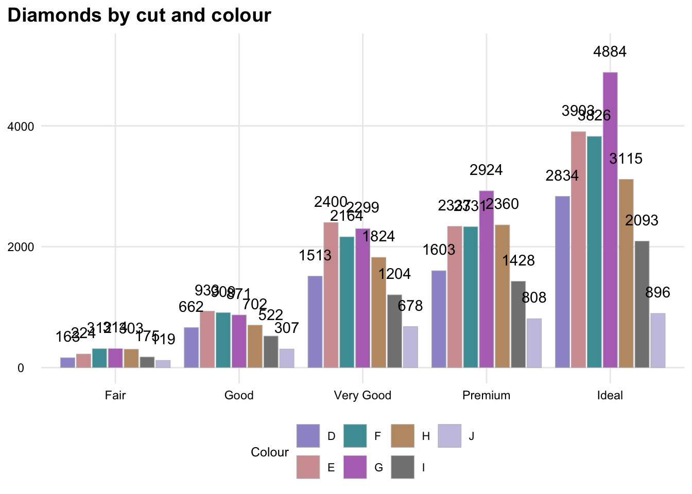
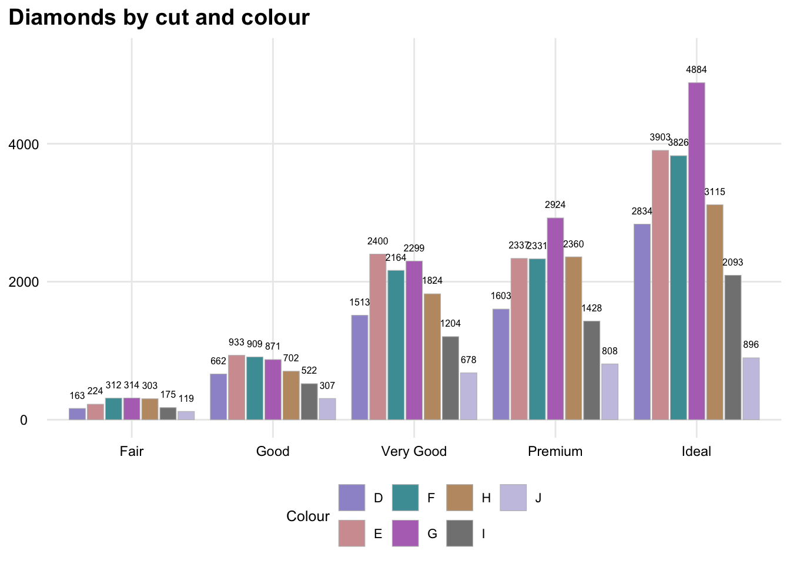
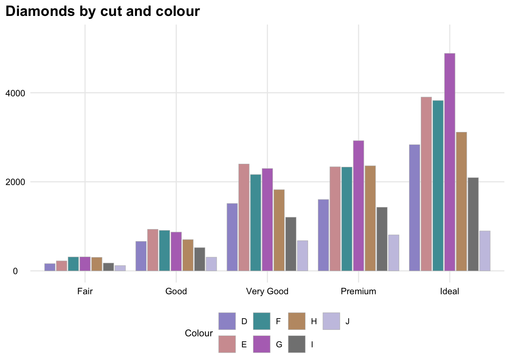
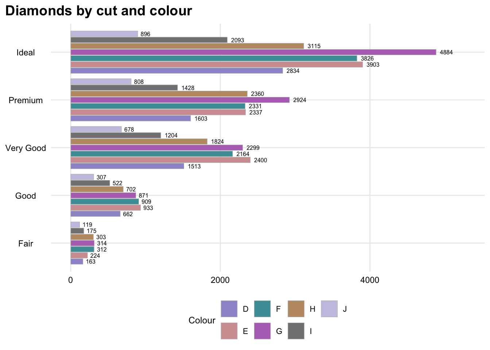
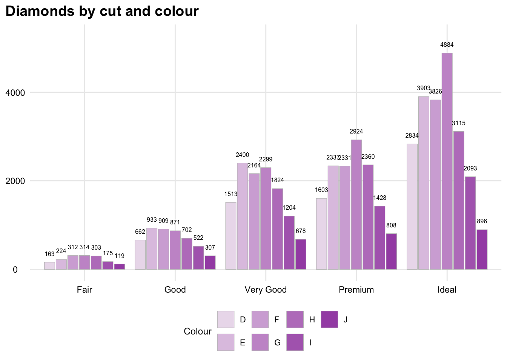

library(tidyverse)
library(visu)10 Clustered bar charts
10.0.1 How bar_clustered() works
Same idea as bar(), but for two categorical variables at once: x groups bars along the axis, fill groups bars side by side within each x group (position = "dodge2"). Colours come from nc_alt1 via scale_fill_pal_categorical(), sized automatically to fill’s number of levels — no fill colour argument to set directly, unlike bar().
dat— the data frame, one row per x/fill combinationx— unquoted column name for the axis groupingy— unquoted column name for the already-computed value each bar showsfill— unquoted column name for the within-group colour groupingx_lab/y_lab/fill_lab— optional axis/legend titlestitle— optional plot titlebase_size— base font size, viatheme_house()horiz—FALSE(default) for upright bars,TRUEto flip horizontal - done by swapping which column maps to the x/y aesthetic, notcoord_flip()(see9_basic_bar_charts.qmd)label_digits— decimal places on each bar’s value label, default 1label_size— font size for value labels, defaultNULL(falls back tobase_size), independent of itlabel_style—"normal"(default),"suppress"(no value labels), or"diag"(labels at 45 degrees)fill_family—NULL(default) coloursfillcategorically, spread acrossnc_alt1families (scale_fill_pal_categorical()); set to a family name (e.g."mint") to colour it sequentially within that one family instead (scale_fill_pal_sequential()) - suited to an orderedfillvariable, no cap on levelsplot_width/plot_height— feed label-wrapping maths only, not the plot’s actual rendered size (see9_basic_bar_charts.qmdfor the fuller explanation)
diamonds cut/color rather than 2_geom_gallery.qmd’s class/drv — that pairing is too sparse to show clustering properly (several classes only have one drivetrain in the data at all, so most “clusters” are really just one bar). Every cut/color combination is well populated, so each cluster actually shows the full comparison.
diamonds_cut_colour <- diamonds %>% count(cut, color)
bar_clustered(diamonds_cut_colour, cut, n, color, title = "Diamonds by cut and colour", fill_lab = "Colour")
10.0.2 The overlap problem, and fixing it
With 7 color levels dodged inside each cut group, the bars get narrow but the value labels stay at base_size regardless, so the numbers collide with their neighbours - visible above. label_size and label_digits are the direct fix: shrinking the label font gives it room to fit, and dropping the decimal (n is a whole-number count, so “.0” is pure wasted width) shortens the text on top of that.
bar_clustered(diamonds_cut_colour, cut, n, color, title = "Diamonds by cut and colour", fill_lab = "Colour", label_size = 6, label_digits = 0)
If that’s still too tight, label_style = "suppress" drops the value labels altogether and leans on the axis/legend instead - a reasonable call once a chart is dense enough that no label size survives gracefully.
bar_clustered(diamonds_cut_colour, cut, n, color, title = "Diamonds by cut and colour", fill_lab = "Colour", label_style = "suppress")
10.0.3 horiz
Flips to horizontal bars - each cut category gets its own row, so the 7 dodged color bars within it have more room top-to-bottom rather than competing for width.
bar_clustered(diamonds_cut_colour, cut, n, color, title = "Diamonds by cut and colour", fill_lab = "Colour", horiz = TRUE, label_size = 6, label_digits = 0)
10.0.4 label_style = “diag”
Rotates the value labels 45 degrees instead - an alternative to shrinking them, for the upright case.
bar_clustered(diamonds_cut_colour, cut, n, color, title = "Diamonds by cut and colour", fill_lab = "Colour", label_style = "diag", label_digits = 0, label_size = 8)10.0.5 fill_family
color is itself ordered (D best through J worst), so a one-hue sequential ramp (scale_fill_pal_sequential() under the hood) carries that ordering in the colour itself, rather than spreading across families the way the categorical default does. 7 levels is past the 5 discrete shades one family has, so this draws on the interpolated branch.
bar_clustered(diamonds_cut_colour, cut, n, color, title = "Diamonds by cut and colour", fill_lab = "Colour", fill_family = "purple", label_size = 6, label_digits = 0)